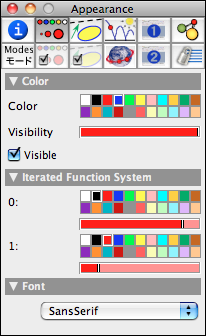

Iterated Function Systems
Iterated function systems (IFS) can be used to generate fractal images in Cinderella. An iterated function system requires several transformations T1, T2, T3, … as input. From these transformations a picture is generated as follows:
First one chooses an arbitrary screen point as the start of an iteration. Then one chooses at random one of the transformations and maps the point and draws it. Then one uses the resulting point of the mapping, chooses a transformation again at random, maps the point, and draws it. This operation is repeated many, many, many times. In this way a "cloud of points" on the screen is created.
The amazing fact about iterated function systems is that this cloud of points is simultaneously self-similar with respect all transformations T1, T2, T3, ….
As an example we consider the situation in the following picture. There two different similarity transformations are defined. One maps point A to itself and point B to Point C. Thus this transformation causes a rotation around A combined with a small contraction (at least for the positions of A, B, and C in the picture below). The second transformation maps A to D and B to E. This also causes a contraction rotation with a different rotation center and contraction rate. The iterated function system defined by these two transformations is shown in the picture below.
 |
| An IFS by two similarities |
Defining an IFS
In order to define an IFS one has first to select several transformations. For doing this one chooses move mode, holds the shift key, and clicks on the desired transformations one after another. In this way a set of transformations is selected. Then one chooses in the menu "Modes → Special" the mode "IFS." Then an IFS is automatically added. In our case the cloud of points that is generated is self-similar with respect to both similarities.
Enhancing the IFS
Admittedly, the IFS so far does not look very impressive. The reason for this is that during the creation of the cloud of points the two transformations were chosen at random with equal distribution. However, the second transformation is by far more contractive than the first one, which causes the points to accumulate in a region close to the fixed point of the second transformation. One can influence the "importance" of a transformation in the inspector by adjusting its relative probability. For this one selects the IFS by shift-clicking it in move mode and opening the inspector. In the appearance tab one finds a slider and a color selector for each transformation involved.
 |
| The IFS inspector |
The slider controls the relative probability with which the transformation is chosen. The color controls the color that is associated with this transformation in the point cloud. Roughly speaking, points that are generated by choosing one transformation relatively often are more likely to have that transformation's color. Lowering the relative probability of the second (more contractive) transformation has a nice effect on our picture. The first similarity (the royation around A) becomes "more important," and much more of the inner spiral is filled.
 |
| A different probability distribution |
If one does not need an extremely fast and immediate response to mouse actions, the picture can be further enhanced by altering the visibility of the IFS. By setting the visibility to a small value one causes each individual dot to be printed with a high level of transparency. If one waits long enough, a picture will be produced that has structure even on the subpixel level.
 |
| Rendering with low visibility |
Changing Parameters
IFS are remarkably rich structures. Depending on the position of the points involved, the IFS may look qualitatively very different even for identical Cinderella constructions. The picture below shows two different choices of parameters for the IFS of the previous example.
 |
 |
|
| Different parameters |
Other defining transformations may cause other (sometimes very stunning) visual effects. In the picture below the first example was created by four different affine transformations. The second picture was created by eight different symmetrically chosen circle inversions.
 |
 |
|
| The Bernsley fern | Hyperbolic fractals |
IFS and Transformation Groups
Iterated function systems are very closely related to the Cinderella concept of transformation groups. A transformation group is a collection of transformations that when applied to a geometric object causes the iterated mapping of this object under the collection of transformations. An IFS can be considered the limit set of this iteration process (if it exists). Consider the example below, in which again two similarities are defined. In the first picture the image of a point under the iterated application of the transformations is shown (together with green segments that symbolize the traces under the mappings). One now can easily create an associated IFS by simply selecting the transformation group (by shift-clicking it in move mode) and then selecting IFS mode. This operation causes the corresponding IFS to be automatically generated. The resulting picture is shown on the right.
 |
 |
|
| A transformation group … | … and its IFS |
Caution
The structure of the IFS depends heavily on the properties of the defining transformations. If the transformations are not "contractive," then one usually will not see any reasonable effect of an IFS, since in this case the points of the cloud accumulate very fast at locations close to the "line at infinity."
Page last modified on Saturday 30 of July, 2011 [20:15:30 UTC].
The original document is available at
http://doc.cinderella.de/tiki-index.php?page=Iterated%20Function%20Systems